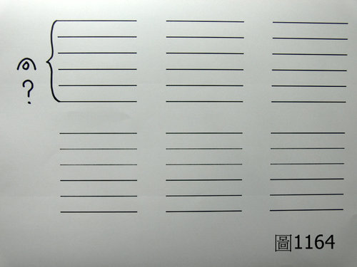

基礎概論 87：簡易脈法不可行
作者：陳建元
或問：
老師您好，一路走來，我對中醫充滿了不解與懷疑，課堂上學習的時候，對中醫充滿了期待，聽起來好像歷代的醫師都很厲害，但是自己出來幾年之後，發現中醫的療效很低，和課堂上講的完全是兩回事，於是開始懷疑中醫的療效，是否只是一些人聯合起來的大騙局？
當初學習的時候，我的老師是以日醫「吉益東洞」學習經方為主，但是我覺得時方也有它的用處，所以我用藥的時候，經方與時方都會使用，基本上，我看診的模式，是先問病人有什麼症狀，先根據病人的幾個症狀找出一個方子或2～3個方子出來，然後再根據病人的其他外候，譬如舌淡白的話我就加一些補氣藥，舌紅我就加一些退火藥，大概就是這樣，我也有向一個老師學脈，老師說脈法是越簡單越好，所以我學的脈法並沒有嚴格的去分層，指法是三指同下，所以只是大致上的把一個浮脈、滑脈、弦脈‥‥‥，這個樣子，如果我把到滑脈的話，我會選用二陳湯、止嗽散來加減；如果我把到弦脈的話，我會選用逍遙散、半夏厚僕湯來加減；如果我把到脈像有力的話，我會選用白虎湯、黃蓮解毒湯來加減；如果我把到脈象無力的話，我會選用四君子湯、補中益氣湯來加減，我是認為我都有按照中醫的方式來用藥，只是訝異藥效為什麼都不出來？在這邊想請老師指導一下我要如何突破這個困境和在同業之間能脫穎而出，如果我學習的過程有什麼錯誤的地方的話，請指正不用客氣，謝謝您。
答：
您所學習中醫的方式，不管是在脈法上或是用藥的模式上，都僅是民間方便套方的用藥模式而已，並非歷代醫家在使用的傳統中醫，所以效果不會出來，講白一點，不是中醫的療效不佳，而是您根本還沒開始學習中醫，如果想突破療效的話，必須回歸學習歷代醫家在使用的傳統中醫才有辦法，否則永遠找不到規則，對中醫也會永遠充滿不解與懷疑。
日人吉益東洞之流是日本古方派的一代宗師代表人物，也是近代「漢醫」脫離「中醫」最大的影響者，雖然有心提倡中醫，無奈心有餘而力不足，又可能礙於中日文字上的隔閡，看不懂《內經》、《難經》、和諸家醫經所寫的是什麼，反而誣說所有的醫經都是垃圾玄學，只要拿著一本傷寒論亂套一通就可以了。
其提倡的不過是：
1. 中國自東漢張仲景之後，「醫道」就已經滅絕了。《醫事或問》、《東洞先生答問書》
2. 所以除了張仲景的藥方之外，天下無可取之方也。《方極》
3. 儒士與醫士雖然不同，但都是要復古才是正確的。《東洞遺稿》
4. 扁鵲、張仲景這些人才是真正的醫師，真正的醫師在看病的時候是只看病人有什麼症狀，然後找一個方劑給他用就對了，並不需要把脈，也不需要探求病機病因，把脈和探求病機病因都是多餘的，我們要學這些人這樣對證（症）揀方來看病就對了。《東洞遺稿》、《建殊錄》、《醫斷》、《藥徵》、《醫事古言》‥‥‥等書。
5. 治療疾病的方法，只有攻的方法，沒有補的方法。《醫斷》
6. 中醫的用藥方法就是方證（症）對應而已。【按照一般的看法，日本古方派的後代門人，也根據自己的需要，把原始的《傷寒論》，刪改成「康平本傷寒論」】
由吉益東洞的這些說法，我們都可以看到當時一位習醫者的難堪和困境，因為對脈證這些東西的不熟悉，只能拿著方劑，對著病人來試藥而倖圖療效，此即所謂的「民間方便套方法」。
正確的中醫系統，包括 「診」與「治」兩個部分，必先「診」而後「治」，也就是必先「診斷」，而後「治療」的意思，而所謂的「民間方便套方法」，則是只有「治」而沒有「診」，也就是說根本沒有診斷，就開始在治療了，根據其說法，病因病機這些東西都是多餘的，都是陰陽玄學，所以看病的時候不需要把脈，也不需要分析病機，只要看到病人有症狀，方劑套上去就是了，而如果病人有幾個症狀，那就方 + 方 + 方套上去就是了，並以此方式自詡高明，號曰這樣子叫做「漢醫」，比「中醫」還高明。
而究其實，不過一個習醫者遇到的難堪和走不出來的困境而已，因為對診法的不熟悉，又看不懂內經、難經、諸家學說在說什麼，乾脆一概否定掉，拿著方劑來亂入一通（參看基礎概論 45：正統中醫歷代諸家的心法軌跡第 1 條），試想，如果這樣子就叫中醫的話，那凡是識字的人，無一人不是中醫，人人早上都可以去書局買一本秘方大全，下午就可以開始按照症狀，開始揀方治病了，中醫根本不用學，何難之有呢？而且這樣子對著症狀套方，又近乎於頭痛醫頭、腳痛醫腳，這樣一來又退回到《內經》之前的年代，只是驗方醫學的範圍而已。
事實上，病因病機這些東西是用來歸納用藥規則的，沒有人在跟您講玄學，會把病因病機當成一種玄學的話，只是表示自己完全沒有醫學基礎，病因病機這些東西是古人從長期與疾病爭鬥的過程中，慢慢發展出來的，譬如遠古的時候，遇到有病患有「頭痛」的症狀，一開始當然拿著各種藥物來亂試一通，結果亂試之後，有的人吃到「白芷」這味藥而頭痛消失，但有的人吃了無效；而又有人吃了「夏枯草」這味藥而頭痛消失，但也是有的人吃了無效；又有人吃了「黃耆」這味藥而頭痛消失，但也是有人吃了無效，這些資料都被一一記錄下來，於是醫學家就開始思索這是怎麼回事？為什麼對於「頭痛」的治療，並不是每個人給予相同的藥物都有效呢？並開始思索如何才能讓每個「頭痛」的病人都能順利的痊癒，於是醫學家就從各種體徵上下手來觀察，努力去觀察吃到「白芷」好的人、吃到「夏枯草」好的人、吃到「黃耆」好的人、其體徵上有何不同？在大量的觀察與歸納之後，發現可以利用脈候上和外候上的表現不同，去區分出來什麼時候該給病人「白芷」，什麼時候該給病人「夏枯草」，什麼時候該給病人「黃耆」，而讓所有「頭痛」的病人都得到滿意的療效，而對於吃到「白芷」好的、吃到「夏枯草」好的、吃到「黃耆」好的經驗，這些結論統計出來之後，就給了這些結論不同的名稱以方便日後的辨識之用，譬如：
吃到「白芷」好的→→因為發現其肺脈上會有浮緊的現象，外候在肺繫上容易有流鼻水、畏寒的表現→→所以叫它「肺受風寒頭痛」。
吃到「夏枯草」好的→→因為發現其肝脈上會有實大的現象，外候在肝繫上容易有目赤、口乾舌燥的表現→→所以叫它「肝火頭痛」。
吃到「黃耆」好的→→因為發現肺脈上常常是呈現無力的狀態，外候上又容易說話無力→→所以叫它「肺氣虛頭痛」。
而這些「肺受風寒頭痛」、「肝火頭痛」、「肺氣虛頭痛」，就是所謂的病機病因，它們不是在跟您講玄理，而是在描述臨床的固定規律，也就是說當遇到頭痛病人的時候，您可以根據病人脈證上的不同來用藥，即：
遇到肺脈浮緊，外候流鼻水、畏寒的頭痛病人→→我們稱呼它「肺受風寒頭痛」→→用白芷就會有效。
遇到肝脈實大，外候目赤、口乾舌燥的頭痛病人→→我們稱呼它「肝火頭痛」→→用夏枯草就會有效。
遇到肺脈虛弱，外候說話無力的頭痛病人→→我們稱呼它「肺氣虛頭痛」→→用黃耆就會有效。
所謂的病機、病因、脈法、外候、藥物，這些在中醫學裡都是連貫在一起的，也標誌著古人已經逐漸的把片斷而零散的有效經驗，開始整合成可以反覆取得療效的固定規律，這個架構起源的很早，內經時代就已經整合到一個可觀的規模，其後的歷代醫家，也是遵循這個架構繼續整合下去，而提高到很精密的程度，此即所謂的「傳統中醫學」，傳統中醫學是一種以脈證架構所累積起來的脈證醫學，如果不從脈證下手的話，是進不去裡面的。
遇到肺脈浮緊，外候流鼻水、畏寒的頭痛病人→→我們稱呼它「肺受風寒頭痛」→→用白芷就會有效。→→等同現代醫學中普通感冒所導致的頭痛。
遇到肝脈實大，外候目赤、口乾舌燥的頭痛病人→→我們稱呼它「肝火頭痛」→→用夏枯草就會有效。→→等同現代醫學中高血壓所導致的頭痛。
遇到肺脈虛弱，外候說話無力的頭痛病人→→我們稱呼它「肺氣虛頭痛」→→用黃耆就會有效。→→等同現代醫學中血氧不足所導致的頭痛。
所以說古代的中醫非常厲害，由仔細的觀察比對中知道症狀雖然都是「頭痛」，但並非一方一法所能盡治，而是要去分析病機的不同（也即病理結構的不同），而給予不同的治療，每個患者才能都獲得滿意的療效，所以在內經中，一直反覆的強調「治病要求本」的概念，何謂求本呢？也即告訴您要分析並根據不同病機病因（病理結構）來分別治療，才能反覆的複製出高療效的意思。
懂了這些概念之後，再回頭來看看吉益東洞走不出來的困境就顯而易見了，沒學脈法沒學脈證，根本就看不懂病機病因在講什麼，到最後根本切不進去中醫，只剩下拿著方劑亂猜，吉益東洞打的旗號是崇古復古的「古方派」，一方面又罵《內經》、《難經》、諸家學說都是玄學，但實質上，他並不崇古也不復古，因為自古以來，歷代醫家並沒有這種奇怪而無厘頭的用藥法（見基礎概論 45：正統中醫歷代諸家的心法軌跡——你學的是正統中醫嗎？ 1），他推銷的只是他的個人猜測而已，何來崇古復古？而罵《內經》、《難經》、諸家學說都是玄學，只是因為自己看不懂，人家在講東，他在講西，人家在講象棋，他拿麻將來湊，自己紮稻草人自己打而已；事實上，如果說看病不需分析病機，不需分清「肺受風寒頭痛」、「肝火頭痛」、「肺氣虛頭痛」‥‥‥的種種不同病理結構，而給予分別施藥，凡是遇到病患「頭痛」的，就背出條文：太陽病、頸項強痛‥‥‥，而一律開給桂枝湯、麻黃湯就能癒病，就能取的高療效的話，這才是真正的推銷玄學與胡說八道。
事實上，吉益東洞提暢的「方證對應玄學」，對近代中醫造成了很大的影響，這是因為鴉片戰爭之後，國人對自己逐漸喪失自信心，民國之後整個中醫幾乎完全處於停頓的狀態，中醫傳統的脈證用藥是配套在一起的，是由脈證為主體所構築起來的架構，只要不會把脈、病機病因則淪為無意義的語詞而不明白到底是在講什麼，於是剩下的就只是古人的糟粕，只剩下拿著方劑套症亂猜，清朝覆敗，中醫科舉被廢除，民國之後在沒有政府主導帶頭的情況下，國人逐漸不認識中醫的真實面貌為何？而之後留學日本的大批留學生，基於日本的月亮比較圓的心態，又把這種不正確的方式學回來，之後這批人進入校園執掌中醫的龍頭之後，從校園中廣泛的推展開來而廣泛流行，至今，我們常看到大批的中醫，開藥方式是不辨病機病因的，只是依照患者的症狀，任選幾個方子亂套一通，這是「漢醫」，不是「中醫」，是由醫師逐漸退化成藥師，由能治大病退化成只能做保養，而當民眾吃中藥而得不到應有的療效時，中醫就會逐漸萎縮，以這種情況再繼續下去的話，可能數十年後，中醫就會退出醫療舞台，因為吃了無效，自然就不會有人再去使用它了。
近代中醫大師常常是有名無實，這是因為並沒有學到傳統中醫的方法，只是學會「方證對應玄學」這種方便套方法而已，這種速食中醫、快餐式的中醫，跑得快，但是跑不遠；飛得快，但是飛不高；有療效，但是無法複製療效；可以癒病，但是哪一次可以癒病則無法確定，總之，中醫變成一種猜猜看的方式，帖帖有希望，但帖帖沒把握，試中是您幸運，試不中是您的命，就像在賭俄羅斯輪盤一樣，「方證對應」使中醫變成一種玄學，而大師為了預防被人識破，無不拿著吉益東洞的瞎說來做掩護，譬如：
1. 除了《傷寒論》之外，所有的《內經》、《難經》、諸家學說都是玄學垃圾。
2. 《傷寒論》不用理解，只要死背起來，隨意亂套就可以了。
3. 現代中醫很爛是因為學了時方。
4. 把脈、病機病因這些都是黑話，都是不需要的。
能拿來恣意瞎說瞎跳的，也只有上面這些東西而已，事實上，這是故意把整個事實說相反了來誤導視聽，現在中醫之所以療效低落，正是由於只學到「方證對應玄學」，並沒有學到真正傳統中醫的緣故，只要去核對歷代醫師的用藥心法，就會發現歷代的代表名醫，沒有人在用「方證對應玄學」或「以方劑為用藥單位」來開藥的。
所以，您在課堂上，老師說歷代的醫師都很厲害，這是正確的，但問題是您所學到的中醫，並非是這種中醫，而是另一種玄學式或亂猜式的中醫而已，而如果真的要走出這個困境的話，必須要開始學習歷代醫家的那種中醫才有辦法，其心法在此：（見基礎概論 45：正統中醫歷代諸家的心法軌跡——你學的是正統中醫嗎？ 1）
中醫藥物的使用，是一種病機對應一類的藥物，譬如「肺脈風寒」是對應麻黃、紫蘇、桂枝這類的解表藥；譬如「脾脈氣虛」是對應黨參、炙甘草這類的補脾氣藥；譬如「腎脈陰虛」是對應熟地、女貞子這類的補腎陰藥，這是歷代醫家所統計出來的病機—藥物的固定規律，中醫的用藥，並不是以患者的症狀去對應上方子，這是因為相同的一個症狀，可以由不同的病機所造成；而一個方子中包含著若干藥味，縱然其中的一些藥味是對應上症狀，但另一些藥味則是不相干或造成反效果的，於是用這種方式來下藥時，就變成了籠統猜測而不精準了。

另外脈法也不是這樣子在用的，如果六部脈不分清楚，浮中沉也不分清楚，只是籠統含糊的把個滑脈、弦脈、虛脈‥‥‥，要這樣子使用的話，不如不要學也不要用，因為這樣子的使用法，不但無法提供用藥的正確病機訊息，反而提供錯誤的病機訊息而造成誤判誤導，譬如相同都是滑脈，但是根據滑脈所處脈位的高低不同，其所代表的病機也不同，譬如：〈圖1159〉這種情況時，病機是「肺脈外感風熱」，治療要用金銀花、金菊花這類的藥物；〈圖1160〉這種情況時，病機是「肺脈實熱」，治療要用生石膏這類的藥物；〈圖1161〉這種情況時，病機是「肺脈熱痰」，治療要用貝母、栝蔞這類的藥物；〈圖1162〉這種情況時，病機是「肺脈風熱」 +「肺脈實熱」，治療要用金銀花、金菊花這類的藥物 + 生石膏這類的藥物；〈圖1163〉這種情況時，病機是「肺脈風熱」 +「肺脈熱痰」，治療要用金銀花、金菊花這類的藥物 + 貝母、栝蔞這類的藥物，如此則每次都能取得療效，而如果脈位都不區分，只是像〈圖1164〉這樣子籠統含糊的把個「滑脈」，然後一律當成滑脈是「痰」，一律開給用貝母、栝蔞的話，命中率恐怕不到 1/ 5。
而如果不區分部脈的不同，又不區分脈位浮中沉的不同的話，譬如〈圖1165〉這種情況時，病機是「肺脈外感風寒」，治療要用麻黃、紫蘇葉這類的藥物；〈圖1166〉這種情況時，如果先排除掉外感的可能性之後，病機是「肺脈陰虛」，治療要用玉竹、沙參這類的藥物；〈圖1167〉這種情況時，病機是「肺脈氣滯」，治療要用陳皮、佛手這類的藥物；〈圖1168〉這種情況時，病機是「肺脈外感風寒」+「肺脈陰虛」，治療要用麻黃、紫蘇葉這類的藥物 + 玉竹、沙參這類的藥物，如此則每次都能取得療效，而如果部脈與脈位都不區分，只是像〈圖1169〉這樣子籠統含糊的把個「弦脈」的話，然後一律當成弦脈是「肝氣滯」，一律開給柴胡、青皮這類理肝氣藥的話，命中的機率是 0，所以這種簡陋的簡略脈法是行不通的，歷代醫家也沒有教過這種自己胡思亂想、錯誤連篇的奇怪脈法，用了反而比不用更糟糕。【參看：脈理醫理學 3.3：學習脈診要避開幾個盲點（二）把脈診完全摒除或太過於簡化】
【引用請先來信告知徵求同意，若有涉及販售營利等商業行為，版權所有拷貝盜用必究。】
【藥王脈學講壇】http://blog.xuite.net/drjychen/twblog